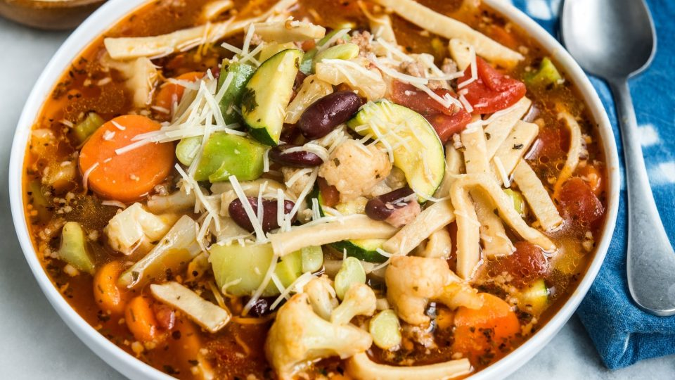

Noodle Stew

Description
This is a random American noodle stew I found on the web as I do not have pictures of the
one I usually create myself.
Ingredients
- Noodles of your choice
- 2 cans Italian-style diced tomatoes
- 1 can red kidney beans, drained & rinsed
- 1/2 teaspoon Oregano
- Parmesan cheese, shredded
- 1 pound bulk Italian sausage
- 2 cans beef broth
- 1 cup water
- 1 bag frozen Italian blend vegetables - although I'd always recommend fresh
- Cook sausages first.
- Add them to a pot, then add tomatoes, beef broth, beans, water and
oregano.
- Bring to a boil.
- Add noodles and return to a boil.
- Reduce heat and cook for 20 minutes.
- Add vegetables and cok for an additional 5 to 10 minutes, or until veggies
are tender.
- Sprinkle with loads of shredded Parmesan cheese.
- Enjoy!